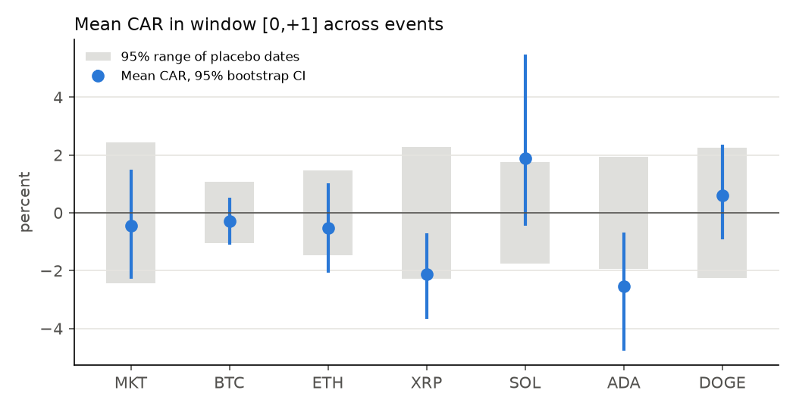
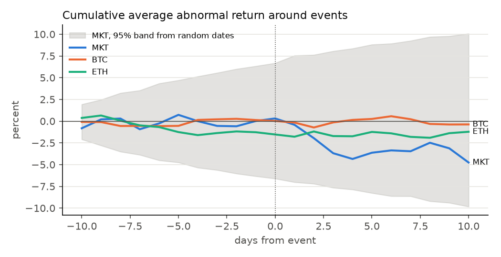
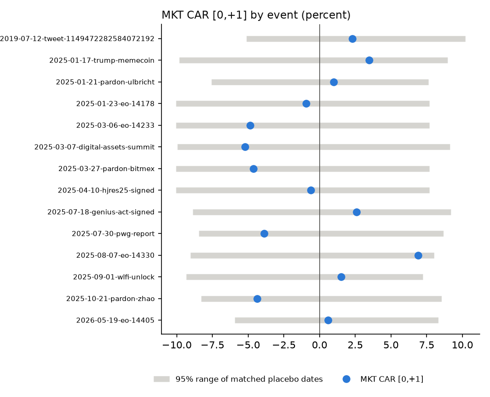
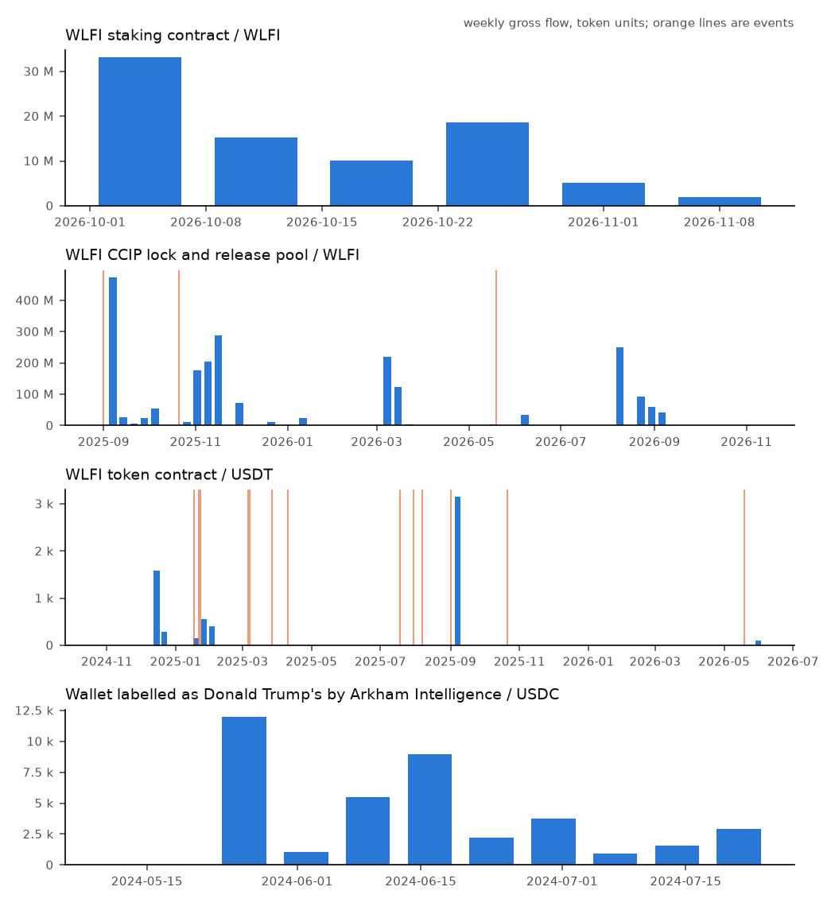

Trump crypto events
Did BTC, ETH and related coins move abnormally around Donald Trump's crypto-related posts and official actions, more than on random dates? A neutral measurement: no political view, no claim about intent, no investment advice.
Run 2026-11-04T05:42:50+00:00. Prices: Binance Vision (CC BY-NC-SA 4.0); charts and tables on this page are derived from it and shared under the same licence. Code: MIT.
Headline
| series | window | n | caar_pct | ci_lo_pct | ci_hi_pct | effect_z | p_matched | q_matched |
|---|---|---|---|---|---|---|---|---|
| MKT | pre[-5,-1] | 14 | 0.278 | -2.838 | 3.310 | 0.147 | 0.752 | 0.912 |
| MKT | [0,+1] | 14 | -0.438 | -2.273 | 1.485 | -0.353 | 0.798 | 0.912 |
| BTC | pre[-5,-1] | 14 | 0.702 | -0.941 | 2.704 | 0.797 | 0.427 | 0.880 |
| BTC | [0,+1] | 14 | -0.289 | -1.096 | 0.520 | -0.533 | 0.834 | 0.912 |
| ETH | pre[-5,-1] | 14 | -0.591 | -2.744 | 1.722 | -0.486 | 0.608 | 0.912 |
| ETH | [0,+1] | 14 | -0.516 | -2.063 | 1.024 | -0.689 | 0.593 | 0.912 |
| XRP | pre[-5,-1] | 14 | 0.917 | -2.678 | 4.632 | 0.542 | 0.769 | 0.912 |
| XRP | [0,+1] | 14 | -2.135 | -3.667 | -0.719 | -1.834 | 0.075 | 0.226 |
| SOL | pre[-5,-1] | 13 | 3.271 | -0.864 | 8.067 | 2.125 | 0.015 | 0.096 |
| SOL | [0,+1] | 13 | 1.897 | -0.447 | 5.475 | 2.107 | 0.014 | 0.096 |
| ADA | pre[-5,-1] | 14 | 2.887 | -3.132 | 10.656 | 2.266 | 0.016 | 0.096 |
| ADA | [0,+1] | 14 | -2.551 | -4.758 | -0.685 | -2.568 | 0.007 | 0.096 |
| DOGE | pre[-5,-1] | 13 | -2.281 | -5.474 | 1.141 | -1.141 | 0.185 | 0.462 |
| DOGE | [0,+1] | 13 | 0.595 | -0.923 | 2.345 | 0.519 | 0.541 | 0.912 |

Path around events

Each event

Without flagged events
| series | window | n | caar_pct | ci_lo_pct | ci_hi_pct | effect_z | p_matched | q_matched |
|---|---|---|---|---|---|---|---|---|
| MKT | [0,+1] | 8 | 1.048 | -1.492 | 3.478 | 0.658 | 0.568 | 0.856 |
| BTC | [0,+1] | 8 | -0.518 | -1.711 | 0.669 | -0.684 | 0.541 | 0.856 |
| ETH | [0,+1] | 8 | -1.015 | -2.467 | 0.490 | -1.078 | 0.255 | 0.811 |
| XRP | [0,+1] | 8 | -1.804 | -3.635 | -0.084 | -1.277 | 0.193 | 0.754 |
| SOL | [0,+1] | 7 | 2.660 | -1.162 | 8.778 | 2.153 | 0.025 | 0.568 |
| ADA | [0,+1] | 8 | -0.993 | -2.500 | 0.491 | -0.775 | 0.320 | 0.815 |
| DOGE | [0,+1] | 7 | 1.224 | -1.189 | 4.187 | 0.821 | 0.349 | 0.815 |
Events and flags
| event_id | type | time_precision | overlaps | near_news |
|---|---|---|---|---|
| 2019-07-12-tweet-1149472282584072192 | post | minute | ||
| 2025-01-17-trump-memecoin | launch | day | ||
| 2025-01-21-pardon-ulbricht | announcement | day | 2025-01-23-eo-14178 | 2025-01-20 Presidential inauguration |
| 2025-01-23-eo-14178 | executive order | day | 2025-01-21-pardon-ulbricht | |
| 2025-03-06-eo-14233 | executive order | day | 2025-03-07-digital-assets-summit | |
| 2025-03-07-digital-assets-summit | announcement | day | 2025-03-06-eo-14233 | |
| 2025-03-27-pardon-bitmex | announcement | day | ||
| 2025-04-10-hjres25-signed | announcement | day | 2025-04-09 Reciprocal tariff pause (EO 14266) | |
| 2025-07-18-genius-act-signed | announcement | day | ||
| 2025-07-30-pwg-report | announcement | day | 2025-07-30 FOMC rate decision | |
| 2025-08-07-eo-14330 | executive order | day | ||
| 2025-09-01-wlfi-unlock | launch | day | ||
| 2025-10-21-pardon-zhao | announcement | day | ||
| 2026-05-19-eo-14405 | executive order | day |
Hourly, timed posts
| series | window | event_id | car_pct | placebo_lo_pct | placebo_hi_pct | p_matched | q_matched |
|---|---|---|---|---|---|---|---|
| MKT | pre[-6h,-1h] | 2019-07-12-tweet-1149472282584072192 | -1.574 | -5.809 | 3.909 | 0.350 | 0.635 |
| MKT | [0,+1h] | 2019-07-12-tweet-1149472282584072192 | 0.431 | -3.066 | 1.464 | 0.490 | 0.635 |
| MKT | [0,+6h] | 2019-07-12-tweet-1149472282584072192 | 1.329 | -3.759 | 4.023 | 0.424 | 0.635 |
| MKT | [0,+24h] | 2019-07-12-tweet-1149472282584072192 | 3.924 | -6.343 | 12.202 | 0.434 | 0.635 |
| BTC | pre[-6h,-1h] | 2019-07-12-tweet-1149472282584072192 | -1.939 | -2.168 | 1.819 | 0.080 | 0.635 |
| BTC | [0,+1h] | 2019-07-12-tweet-1149472282584072192 | 0.163 | -1.144 | 1.153 | 0.470 | 0.635 |
| BTC | [0,+6h] | 2019-07-12-tweet-1149472282584072192 | -1.165 | -1.503 | 1.773 | 0.172 | 0.635 |
| BTC | [0,+24h] | 2019-07-12-tweet-1149472282584072192 | -2.783 | -4.165 | 4.267 | 0.121 | 0.635 |
| ETH | pre[-6h,-1h] | 2019-07-12-tweet-1149472282584072192 | -0.643 | -1.763 | 1.865 | 0.350 | 0.635 |
| ETH | [0,+1h] | 2019-07-12-tweet-1149472282584072192 | 0.554 | -1.327 | 2.231 | 0.380 | 0.635 |
| ETH | [0,+6h] | 2019-07-12-tweet-1149472282584072192 | -0.341 | -1.982 | 2.853 | 0.535 | 0.635 |
| ETH | [0,+24h] | 2019-07-12-tweet-1149472282584072192 | -2.180 | -3.463 | 5.181 | 0.182 | 0.635 |
On-chain flows of attributed addresses
The data shows timing, not motive.
| address_label | confidence | token | transfers | first | last | n | mean | p | placebo_mean | ratio | q |
|---|---|---|---|---|---|---|---|---|---|---|---|
| WLFI staking contract | high | WLFI | 1061 | 2026-10-01 | 2026-11-04 | 0.000 | |||||
| WLFI staking contract | high | USD1 | 5 | 2026-10-02 | 2026-11-02 | ||||||
| WLFI CCIP lock and release pool | high | WLFI | 1491 | 2025-08-30 | 2026-11-03 | 2.000 | 92,692,157.255 | 0.127 | 29,449,143.189 | 3.147 | 0.127 |
| WLFI token contract | high | USD1 | 10 | 2025-05-22 | 2026-07-14 | ||||||
| WLFI token contract | high | USDC | 13 | 2024-10-15 | 2026-07-14 | ||||||
| WLFI token contract | high | USDT | 35 | 2024-10-23 | 2026-05-31 | 13.000 | 331.647 | 0.034 | 73.125 | 4.535 | 0.068 |
| Wallet labelled as Donald Trump's by Arkham Intelligence | medium | WETH | 1 | 2025-09-08 | 2025-09-08 | ||||||
| Wallet labelled as Donald Trump's by Arkham Intelligence | medium | USDC | 99 | 2024-05-09 | 2024-07-21 | 0.000 | |||||
| Wallet labelled as Donald Trump's by Arkham Intelligence | medium | USDT | 3 | 2024-06-11 | 2025-01-17 |

Keyword rule precision
| corpus | rule | labelled | predicted | correct | precision | recall_in_labelled |
|---|---|---|---|---|---|---|
| federal register | API search hit | 14 | 14 | 4 | 0.286 | 1.000 |
| federal register | keyword rule | 14 | 3 | 3 | 1.000 | 0.750 |
| tweets | substring baseline | 54 | 54 | 2 | 0.037 | 1.000 |
| tweets | keyword rule | 54 | 2 | 2 | 1.000 | 1.000 |